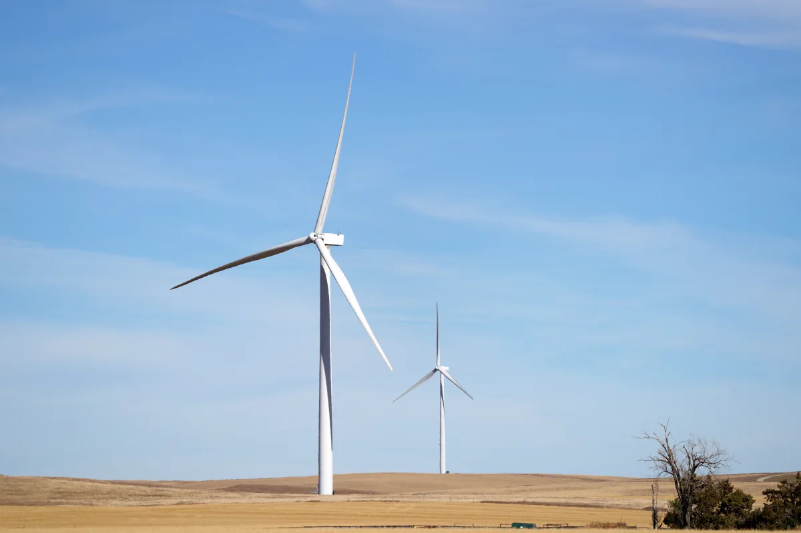

Automoción
Vincule la profundidad de capa y el acabado requeridos con la atmósfera, la temperatura y los registros de producción.
- Profundidad de capa y dureza
- Estabilidad del potencial de carbono
Explore los componentes, las variables del proceso y los requisitos de control de su aplicación.
Vincule la profundidad de capa y el acabado requeridos con la atmósfera, la temperatura y los registros de producción.

Convierta los requisitos de medición, registro y revisión de la especificación del cliente en un flujo documentado.

Compare la cementación profunda y la nitruración controlada según el material, la capa requerida y la distorsión admisible.

Ajuste el suministro de gas y el ciclo térmico al material, al horno y al acabado superficial requerido.

Defina el perfil térmico, la atmósfera, la limpieza y los registros de lote antes de evaluar la integración del control.
Comunique el material, el tipo de horno y el resultado esperado a un ingeniero de Gauss.